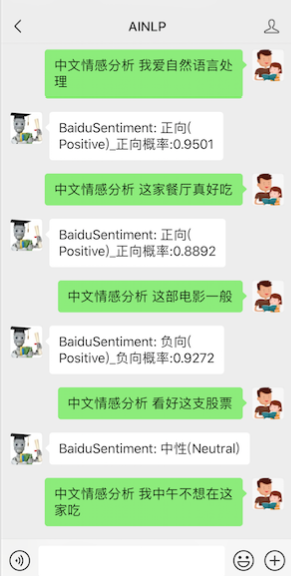

情感分析是自然语言处理里面一个热门话题，去年参加AI Challenger时关注了一下细粒度情感分析赛道，当时模仿baseline写了一个fasttext版本：AI Challenger 2018 细粒度用户评论情感分析 fastText Baseline ，至今不断有同学在star这个项目：fastText-for-AI-Challenger-Sentiment-Analysis
周末通过PaddleHub试用了一下百度的深度学习中文情感分析工具Senta，还是很方便，于是，将这个作为中文情感分析的一个技能点加入到了AINLP公众号的对话中，感兴趣的同学可以先测试：

至于安装和使用，还是简单说一下，以下是在Ubuntu16.04, Python3.x virtualenv环境下安装和测试。
安装直接通过pip install即可：
pip install paddlepaddle（这里用的是CPU版本） pip install paddlehub
关于如何使用百度这个中文情感分析工具，最直接的方法还是follow官方demo脚本：
PaddleHub/demo/senta/senta_demo.py
在iPython中大致如下调用：
Python 3.5.2 (default, Nov 12 2018, 13:43:14) Type 'copyright', 'credits' or 'license' for more information IPython 7.5.0 -- An enhanced Interactive Python. Type '?' for help. In [1]: import paddlehub as hub In [2]: senta = hub.Module(name="senta_bilstm") 2019-07-06 22:33:01,181-INFO: Installing senta_bilstm module 2019-07-06 22:33:01,182-INFO: Module senta_bilstm already installed in /home/textminer/.paddlehub/modules/senta_bilstm In [3]: test_text = ["这家餐厅很好吃", "这部电影真的很差劲","我爱自然语言处理"] In [4]: input_dict = {"text": test_text} In [5]: results = senta.sentiment_classify(data=input_dict) 2019-07-06 22:33:53,835-INFO: 13 pretrained paramaters loaded by PaddleHub 2019-07-06 22:33:53,839-INFO: 20 pretrained paramaters loaded by PaddleHub In [6]: for result in results: ...: print(result) ...: {'positive_probs': 0.9363, 'text': '这家餐厅很好吃', 'sentiment_key': 'positive', 'negative_probs': 0.0637, 'sentiment_label': 2} {'positive_probs': 0.0213, 'text': '这部电影真的很差劲', 'sentiment_key': 'negative', 'negative_probs': 0.9787, 'sentiment_label': 0} {'positive_probs': 0.9501, 'text': '我爱自然语言处理', 'sentiment_key': 'positive', 'negative_probs': 0.0499, 'sentiment_label': 2} |
目前百度Senta提供3个情感分析分类标签，分别是正向（Positive/积极)，负向（Negative/消极），中性（Neutral/中立)，中性的Case也会给出正向及负向概率，例如测试"我恨自然语言处理"，得到了一个中性分类标签，不过负向概率还是大一点：
In [27]: text = ['我恨自然语言处理'] In [28]: input_dict = {"text": text} In [29]: result = senta.sentiment_classify(data=input_dict) In [30]: print(result[0]) {'positive_probs': 0.4598, 'text': '我恨自然语言处理', 'sentiment_key': 'neutral', 'negative_probs': 0.5402, 'sentiment_label': 1} |
至于这个工具的效果如何，大家可以多测测，也可以参考这篇文中的一些测试用例：
17行代码做情感分析？试试PaddlePaddle的Senta-BiLSTM吧！
关于百度情感分析工具，官方已经开源了相关代码，可以参考官方代码和文档，写得很详细：
百度Senta github：https://github.com/baidu/Senta
baidu/Senta：Baidu's open-source Sentiment Classification System.
飞桨PaddlePaddle知乎专栏：https://zhuanlan.zhihu.com/p/60583819
PaddlePaddle Fluid实战：使用百度 Senta 情感分析系统
最后，如果什么都不想做只想测试这个工具的同学，欢迎关注AINLP公众号，对话直接输入'中文情感分析: 测试内容' 触发测试即可：
注：原创文章，转载请注明出处及保留链接“我爱自然语言处理”：http://www.52nlp.cn
本文链接地址：百度深度学习中文情感分析工具Senta试用及在线测试 http://www.52nlp.cn/?p=12017
一个有趣有AI的NLP公众号，欢迎关注